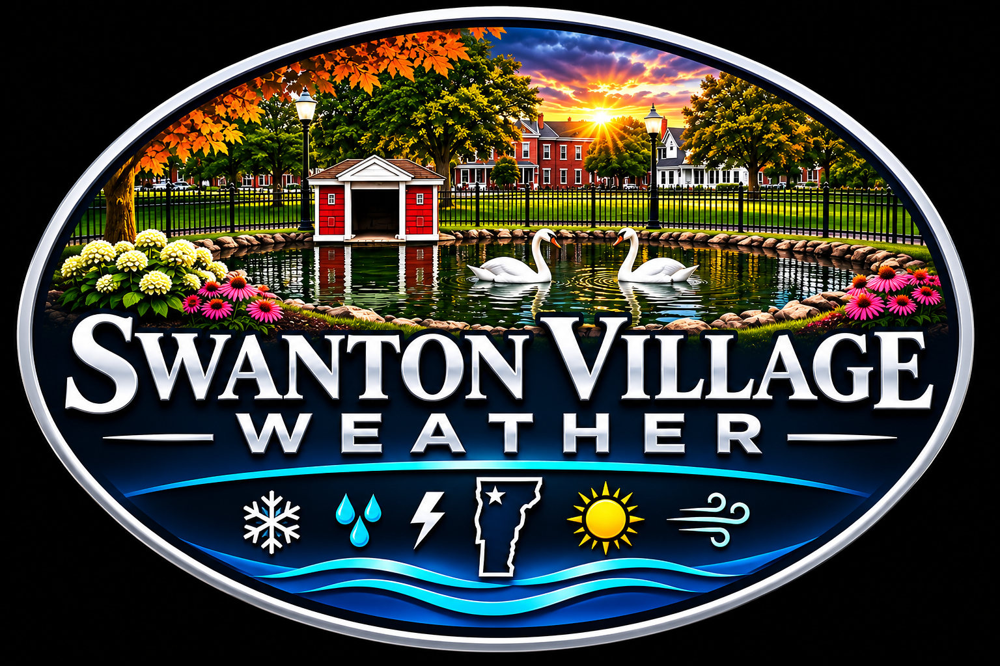

Loading forecast...
Retrieving the latest forecast from the National Weather Service.

Swanton, Vermont • Lake Champlain Valley
LIVE FROM SWANTON VILLAGE
Hyperlocal observations from a Davis weather station in Swanton Village, Vermont.
Weather Underground station KVTSWANT4
Feels Like: --
Dew Point: --
Relative Humidity: --
Wind: --
Wind Gust: --
Today's Rain: --
Checking for active alerts...
Retrieving the latest forecast from the National Weather Service.
Loading live data...
Davis stationLoading live data...
Davis stationLoading live data...
Station precipitationLoading live data...
Station observations-- °F
-- °F
Season snowfall, individual storm totals and historical winter records for Swanton Village.
Local forecasts, storm reports, snowfall updates and notable weather events will appear here.